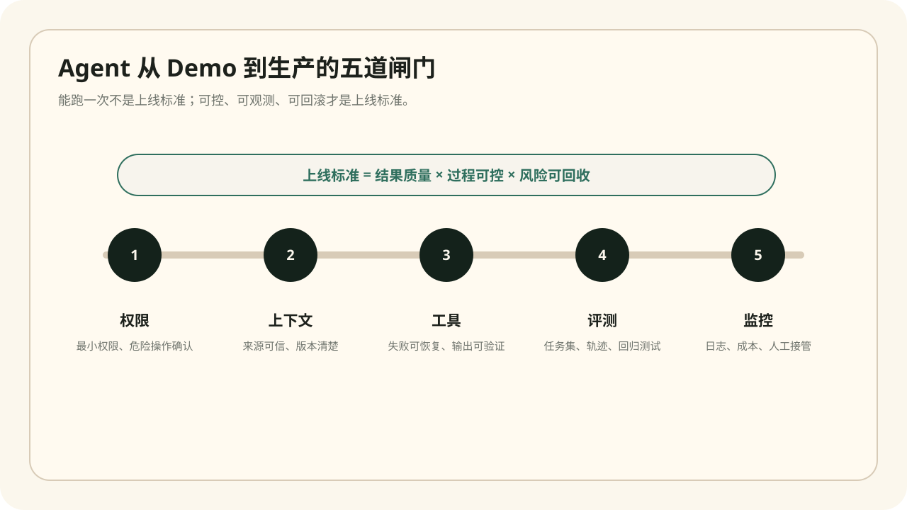

Featured
精选阅读
先从这些文章开始。它们覆盖 Agent 开发、Java 可维护性、项目上线三条主线，也是这个博客后续内容的基础。

Java 项目如何避免越写越乱
用真实目录、模型隔离、事务拆分、测试命名和日志字段，建立可持续演进的项目秩序。
 阅读全文
阅读全文
Agent 工程落地清单
从权限矩阵、上下文分层、工具轨迹、评测记录到接管触发器，给 Agent 上线前做风险体检。

阅读全文Library
文章库
文章会持续围绕一个问题展开：怎样把技术能力转化成稳定、可交付、可复盘的工程结果。
Agent 开发和传统 Java 开发有什么不同
对比接口契约、工具协议、测试轨迹和工程师判断力迁移。
Java 项目如何避免越写越乱
用目录结构、事务代码、测试策略和日志实践降低长期变更成本。
Agent 工程落地清单
用权限矩阵、评测 JSON、监控指标和接管机制把 Demo 推向生产。
博客上线记录
记录这个静态博客如何从空仓库发布到 GitHub Pages。
Method
写作方法论
每篇文章尽量避免“概念复述”，而是输出工程师能直接拿走的判断框架。
先给边界
明确适用场景、反例和不该做的事情。
再讲取舍
技术方案没有绝对好坏，只有成本、风险和上下文。
补齐验证
上线前看测试，上线后看日志、指标和反馈。
沉淀清单
把一次经验变成下次可复用的检查项。
About
关于 Yunxi
我更关心技术如何真的落地：一段代码能不能维护，一个系统能不能解释，一个 Agent 能不能在不确定的任务里安全工作。这个博客会持续记录全栈开发、Java 后端、Agent 工程化和项目复盘。